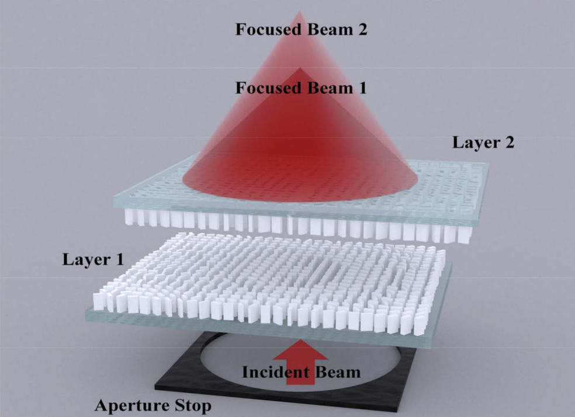

|
Research Interests
I am interested in computational imaging with joint optimization of
optics and algorithms. I am currently working on developing computational imaging based on the metasurface for interesting
applications, such as hyperspectial imaging and holographic display, etc.
|
|

|
Continuous-zoom bifocal metalens by mutual motion of cascaded bilayer metasurfaces in the visible
Chang Wang, Yan Sun,
Qiangbo Zhang,
Zeqing Yu, Chenning Tao, Jinlei Zhang, Fei Wu, Rengmao Wu, and Zhenrong Zheng
Optics Express, 2021,[PDF]
We propose to use a system of two cascaded bilayer metasurfaces to achieve optical dual zoom by moving the radially relative positions of the two metasurfaces.
|
|